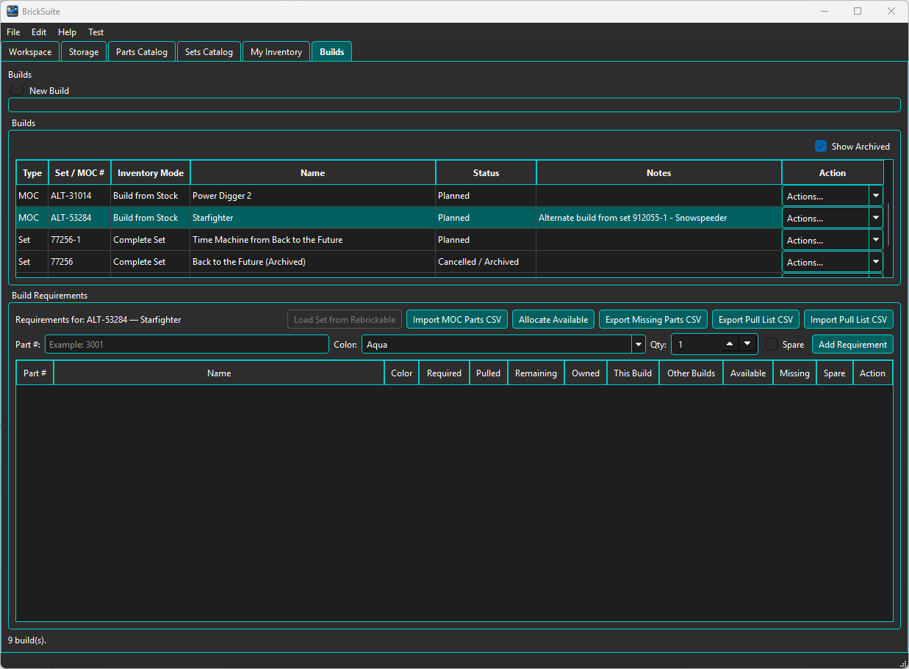
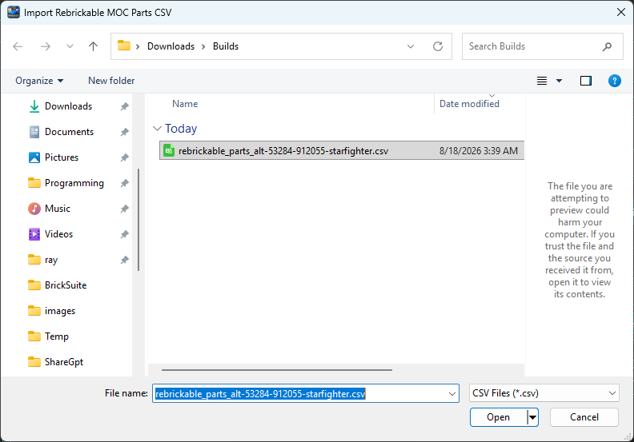
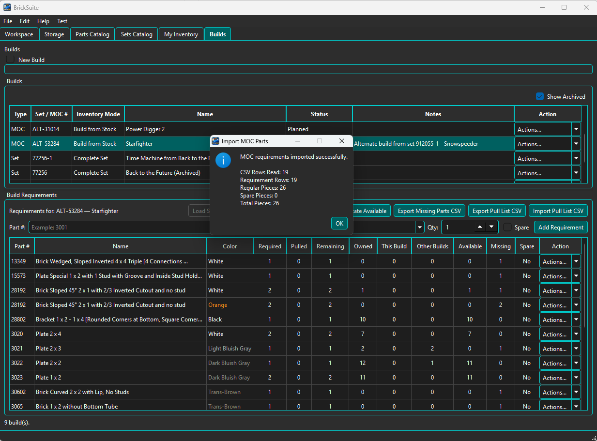
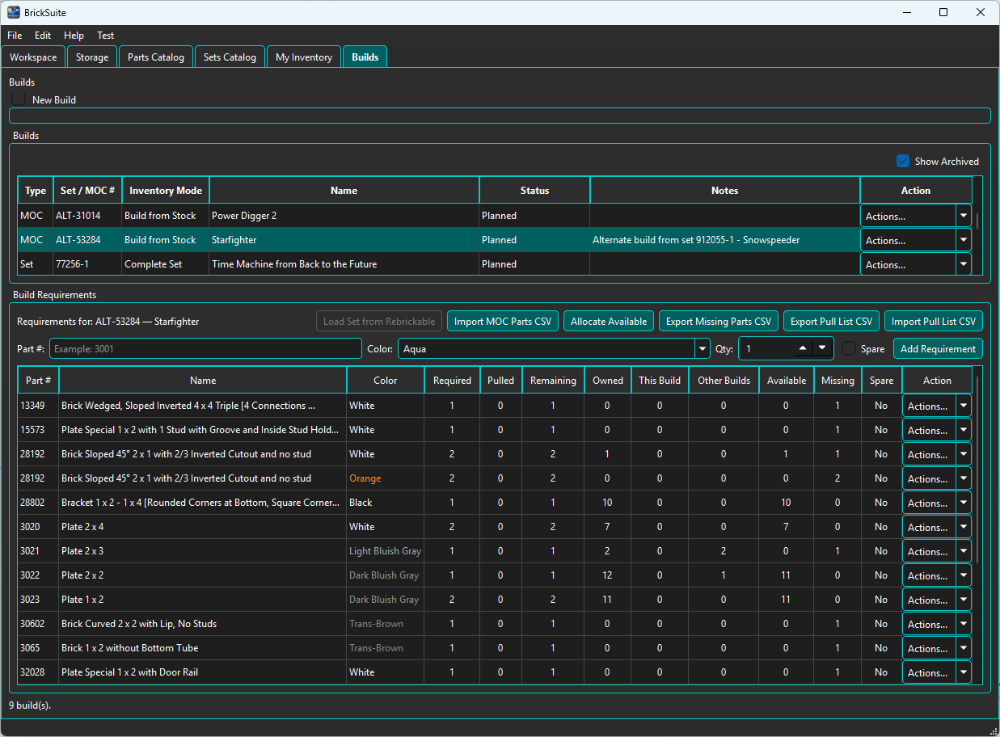

A MOC (My Own Creation) Build lets BrickSuite manage a custom collection of part requirements that is not loaded from the Sets Catalog. In BrickSuite, a MOC becomes a normal Build once its requirements have been entered or imported.
The most common workflow is to create a MOC Build and import its requirements from a Rebrickable MOC parts CSV.
Set Build
Requirements are loaded from Rebrickable Set data.
MOC Build
Requirements are imported from a MOC CSV
or entered as individual requirements.
|
v
Once requirements exist, both use the normal
BrickSuite Build workflow:
Allocate -> Missing Parts -> Pull -> Reconcile -> Complete
The difference is primarily where the requirements come from. Allocation, inventory shortages, physical pulling, and completion use the same Build model afterward.
Create a new Build with Type = MOC and identify the MOC with a useful number and name. MOCs are commonly managed as Build from Stock projects because BrickSuite compares their requirements with the loose inventory available in the Workspace.

The example uses MOC ALT-53284 — Starfighter, an alternate build based on Set 912055-1 — Snowspeeder. The Build is in Planned status and its Build Requirements table is initially empty.
This empty state is expected: creating the MOC Build establishes the project, but it does not yet tell BrickSuite which pieces the MOC requires.
With the MOC selected, choose Import MOC Parts CSV and select the CSV containing the MOC's part requirements.

In this example the selected file is rebrickable_parts_alt-53284-912055-starfighter.csv. Using a descriptive filename can make MOC files easier to recognize later, but the requirements themselves come from the CSV contents.
BrickSuite reads the CSV and reports the result before you continue with the Build.

For the Starfighter example, BrickSuite reports:
The requirements appear immediately in the Build Requirements table behind the success message. Each imported requirement identifies the part, color, and quantity needed by the MOC.
After dismissing the import result, the requirements remain attached to the MOC Build and BrickSuite compares them with the current Workspace inventory.

The requirements table now shows the same inventory-state columns used by other Builds: Required, Pulled, Remaining, Owned, This Build, Other Builds, Available, and Missing.
This comparison can immediately reveal several different conditions. Some requirements may have enough loose inventory available, some may be partly satisfiable, and others may already be unavailable because matching pieces are reserved by another Build.
The Build Requirements area also provides controls for entering a Part number, Color, Quantity, and Spare status. This allows individual MOC requirements to be added when appropriate, rather than requiring every MOC to originate entirely from a CSV.
Use the requirement row's Actions menu for supported maintenance operations on an existing requirement.
Once the requirements are correct, allocation works exactly as it does for other Build from Stock projects. You can allocate individual requirements manually or choose Allocate Available to let BrickSuite reserve available loose inventory automatically.
See Allocate Available for the detailed manual and automatic allocation workflow.
If the Workspace cannot satisfy every MOC requirement, the unresolved quantities remain visible in the Missing column. Export the missing-parts CSV when you need an external acquisition list.
The larger Power Digger 2 MOC example in Missing Parts demonstrates this workflow, including a realistic mix of fully available, partially available, and completely missing requirements.
When the requirements are allocated and shortages have been resolved, the MOC follows the same physical workflow as other Builds:
Export Pull List CSV
|
Physically pull the pieces
|
Record actual Pulled quantities
|
Import Pull List CSV
|
Preview and Reconcile
|
Assemble the MOC
|
Complete the Build
The pull-list round trip keeps the MOC's digital state synchronized with the pieces actually removed from physical Storage. See Builds for the complete workflow.
Both workflows can use CSV files, but they serve very different purposes:
MOC CSV Defines what a Build needs. Creates Build requirements. Does not add loose inventory. Owned-parts CSV Describes physical pieces you own. Adds or synchronizes My Inventory. Does not create Build requirements.
See Rebrickable Import for owned-parts inventory imports.
Builds | Allocate Available | Missing Parts | My Inventory | Rebrickable Import